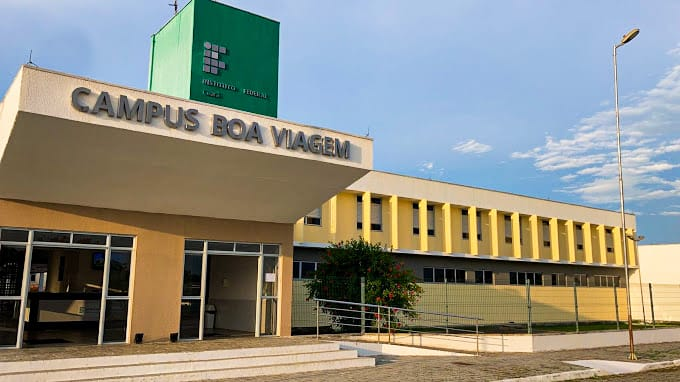

Nossa Instituição
Sobre o IFCE Campus Boa Viagem
O Instituto Federal do Ceará (IFCE) Campus Boa Viagem atua fortemente com foco no desenvolvimento regional, oferecendo educação profissional, científica e tecnológica pública, gratuita e de elevadíssima qualidade.
Infraestrutura Acadêmica
Para garantir a excelência dos cursos ofertados, em especial o eixo tecnológico de Análise e Desenvolvimento de Sistemas (ADS), o campus dispõe de uma estrutura moderna projetada para o ambiente acadêmico:
- Laboratórios de Informática modernos, climatizados e equipados com hardwares de alto desempenho.
- Biblioteca setorial com acervo físico atualizado nas áreas de computação, engenharia e formação geral, além de salas de estudo individuais e coletivas.
- Salas de aula totalmente climatizadas e equipadas com recursos multimídia para melhor aproveitamento didático.
- Áreas de convivência e pátio integrado para socialização e eventos acadêmicos.
Apoio e Assistência Estudantil
A permanência e o sucesso dos nossos discentes são prioridades fundamentais. Através da Coordenadoria de Assuntos Estudantis (CAE), o IFCE Campus Boa Viagem disponibiliza aos estudantes um suporte integrado que conta com apoio pedagógico, assistência psicológica e acompanhamento social, auxiliando o aluno em toda a sua trajetória acadêmica.